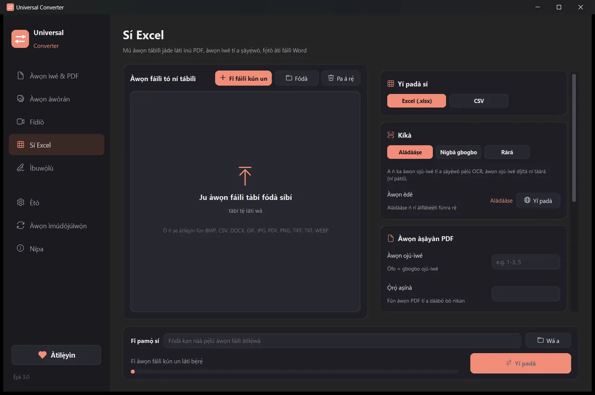

Mú tábìlì jáde láti inú ìwé-owó PDF sí Excel
Dída ìlà ìwé-owó kọ pẹ̀lú ọwọ́ lọ́ra, ó sì máa ń ní àṣìṣe. Universal Converter ń rí àwọn tábìlì nínú ìwé-owó kọ̀ọ̀kan, yálà PDF ni, ìwé tí a ṣàyẹ̀wò tàbí fọ́tò, ó sì ń fi wọ́n sínú tábìlì ìṣirò tí o lè tò, ṣírò àti kó wọlé.
Bí a ṣe ń fi sórí ẹ̀rọ àti ṣe ìmúdójúìwọ̀n
- Ṣí .dmg tí o gbà sílẹ̀, kí o sì fa Universal Converter sínú Applications.
- Ṣí áàpù náà. Ní ìgbà àkọ́kọ́, macOS yóò dí i nítorí Apple kò buwọ́lu ú: tẹ Done.
- Ṣí System Settings > Privacy & Security, yí lọ sísàlẹ̀, tẹ Open Anyway kí o sì tẹ ọ̀rọ̀ aṣínà rẹ. Ẹ̀ẹ̀kan ṣoṣo ni o máa ṣe èyí.
Ìmúdójúìwọ̀n: bí o bá gbà á láàyè nígbà tí áàpù kọ́kọ́ ṣí, yóò máa ṣàyẹ̀wò ẹ̀yà tuntun ní gbogbo ìgbà tí ó bá bẹ̀rẹ̀, yóò fìdí ìbuwọ́lù díjítà wọn múlẹ̀, yóò sì fi wọ́n sórí ẹ̀rọ nígbà tí o bá yàn.
Bí a ṣe ń fi sórí ẹ̀rọ àti ṣe ìmúdójúìwọ̀n
- Tẹ “Gbà á sílẹ̀ fún Android” lórí fóònù rẹ.
- Ṣí fáìlì tí o gbà sílẹ̀. Bí Android bá béèrè, gba aṣàwákiri tàbí olùṣàkóso fáìlì rẹ láàyè láti fi áàpù sórí ẹ̀rọ.
- Tẹ Install.
Ìmúdójúìwọ̀n: áàpù náà ń ṣàyẹ̀wò ní nǹkan bí ẹ̀ẹ̀kan lójúmọ́, ó sì ń sọ fún ọ nígbà tí ẹ̀yà tuntun bá ṣetán. Gbà á sílẹ̀ lọ́nà kan náà kí o sì fi í sórí èyí tí ó ti wà; a ó tọ́jú àwọn ètò rẹ.
Bí a ṣe ń ṣe é
- Ṣí Universal Converter kí o sì yan Sí Excel ní apá òsì.
- Fà àwọn fáìlì rẹ tàbí gbogbo fódà kan sínú fèrèsé, tàbí tẹ “Fi fáìlì kún un”.
- Yan Excel (tàbí CSV). Fi ọ̀pọ̀ ìwé-owó kún un pọ̀ láti yí wọn padà lẹ́ẹ̀kan.
- Tẹ “Yí padà”. A ó fi àwọn fáìlì tuntun pamọ́ lẹ́gbẹ̀ẹ́ àwọn àtilẹ̀wá, tàbí sínú fódà tí o yàn.

Kí ló dé tí a fi ń ṣe é láìsí íńtánẹ́ẹ̀tì?
Universal Converter ń ṣe iṣẹ́ náà lórí ẹ̀rọ tìrẹ. Àwọn fáìlì rẹ ń wà ní ìkọ̀kọ̀, fáìlì ńlá kì í ṣe ìṣòro, ó sì ń ṣiṣẹ́ láìsí íńtánẹ́ẹ̀tì.
Àwọn nǹkan mìíràn tí ó lè ṣe
- Yí PDF padà sí Word
- Yí ìwé Word padà sí PDF
- Da ọ̀pọ̀ fáìlì pọ̀ sí PDF kan
- Fún PDF pọ̀ sí ìwọ̀n tí o yàn
- Yí ojú-ìwé PDF padà sí àwòrán JPG
- Sọ ìwé tí a ṣàyẹ̀wò di fáìlì Word tí a lè ṣàtúnṣe
- Yí àwòrán padà láàárín JPG, PNG, WEBP àti àwọn mìíràn
- Yí ìwọ̀n àwòrán padà tàbí dín wọn kù sí ìwọ̀n fáìlì kan
- Da fọ́tò pọ̀ sí PDF kan
- Da ọ̀rọ̀ inú àwòrán kọ (OCR)
- Fún fídíò pọ̀ láìgbé e sókè
- Yí fídíò padà láàárín MP4, MKV, WebM, MOV àti AVI
- Fi ohùn fídíò pamọ́ bí MP3
- Ṣe GIF láti inú fídíò
- Mú tábìlì láti inú PDF lọ sí Excel
- Yí PDF àkọsílẹ̀ báǹkì padà sí Excel
- Buwọ́lu PDF
- Kún fọ́ọ̀mù PDF